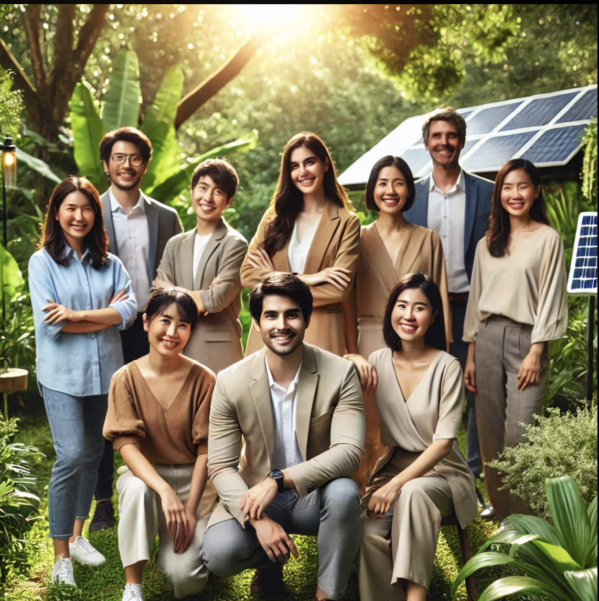

EcoFreshly
Tú piel, es nuestra prioridad
Tú piel, es nuestra prioridad
En EcoFreshly, creemos en el poder de lo natural. Somos una empresa comprometida con el medio ambiente, dedicada a ofrecer productos de cuidado de la piel ecológicos y sostenibles. Nuestro objetivo es transformar tu rutina de cuidado personal en una experiencia saludable para ti y el planeta.
No solo nos dedicamos a crear productos, sino también a fomentar un estilo de vida consciente y sostenible. Creemos firmemente que cada pequeño paso hacia la sostenibilidad puede generar un gran impacto en el futuro de nuestro planeta. Por ello, diseñamos cada producto con amor y respeto por el medio ambiente, utilizando empaques reciclables y fórmulas libres de ingredientes tóxicos.
Nuestro equipo está formado por profesionales apasionados que comparten una visión común: cuidar de la piel de nuestros clientes mientras protegemos el entorno que nos rodea. Nos inspira la idea de que cada decisión que tomamos en nuestra rutina diaria puede ser una oportunidad para cuidar de nuestro cuerpo y del planeta al mismo tiempo.
Nos guiamos por tres pilares fundamentales:
Ya sea que estés buscando un producto para hidratar tu piel, reducir el impacto ambiental de tu rutina de belleza o simplemente unirte a una comunidad que se preocupa por el planeta, EcoFreshly es tu hogar.
Desde nuestros inicios, hemos trabajado para crear una línea de productos que no solo beneficie a nuestra piel, sino que también reduzca nuestro impacto ambiental. Cada ingrediente que utilizamos es cuidadosamente seleccionado, asegurándonos de que sea 100% natural, orgánico y libre de crueldad animal.
¡Únete a nuestra misión y descubre una nueva manera de cuidarte mientras cuidas del mundo!